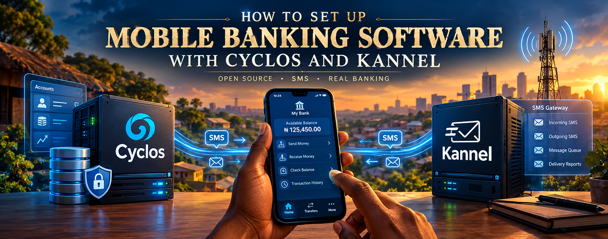

In 2013 I modelled mobile banking with Cyclos as the banking core and Kannel as the SMS gateway, with a MiFi USB adapter from Etisalat as the radio. Getting those three pieces to talk to each other took the better part of several months. This time the radio is an Android phone on a USB cable, the whole environment is a folder of re-runnable scripts plus one small Python service, and Claude wrote and debugged them in a working session of about a day. This is what was built, what broke along the way, and what is still not finished.
The idea has not changed: a customer sends a text message from an ordinary phone, a bank-grade ledger moves the money, and a text message comes back. What has changed is how much of the plumbing has to be assembled by hand.
sendsms dialect; Kannel itself is an optional extra
Swapping a modem for a phone is not just a matter of taste. A stock Android phone cannot act as the AT
modem that Kannel wants to drive over USB. So the phone runs an app that exposes its SMS ability as a
small HTTP API, and an adb tunnel over the same USB cable carries that API to the laptop. No
Wi-Fi, no root.
Cyclos 4 has its own SMS channel that calls a plain HTTP URL, so it no longer needs Kannel between
it and the radio. The bridge copies Kannel's URL shape (/cgi-bin/sendsms?username=…&password=…&to=…&text=…)
and even answers with Kannel's 0: Accepted for delivery, so Cyclos, or any older tooling
that expects Kannel, can talk to it unchanged.
Stage 40 of the setup still installs real Kannel, with the bridge configured as its "generic" HTTP SMSC. It is optional and off by default.
Everything runs on one Ubuntu laptop. The only thing outside it is the phone, and the only thing between the two is a USB cable.
Outbound, left to right. Inbound takes the same route in reverse.
/cgi-bin/sendsms checks the username and password, restores a + the query string turned into a space, and calls the phone./webhook receives the phone's sms:received event and forwards sender and text to Cyclos.adb forward: laptop 127.0.0.1:18080 to phone :8080.adb reverse: phone localhost:8081 to laptop :5000.The environment is built by numbered stages, and each stage is also a standalone script that is safe to re-run. That paid off in practice: the fix described below was "change one line in stage 10, re-run stage 10", not "start again".
~/tomcat if it is 9.x, otherwise installs ~/tomcat9), adb, git, Python 3.cyclos4 database and extensions, deploys Cyclos as Tomcat's ROOT app, writes its config, starts Tomcat and waits until Cyclos answers.cyclos-bridge systemd service and checks its /health endpoint.~/git/mobile-banking.
Around them sit run-all.sh (which takes --from and --until so a run
can stop after Cyclos and resume at the phone), cyclosctl.sh for start, stop, status and
logs, phone-tunnel.sh to rebuild the adb tunnels, and lib.sh for shared helpers.
If a stage fails, run-all.sh prints the exact command to resume from it.
Cyclos 4.16 needs Tomcat 9; Tomcat 10 and later moved to jakarta.* packages and will not run
it. It also needs PostgreSQL with PostGIS and four extensions: cube,
earthdistance, unaccent and pgcrypto. Stage 00 installs all of it and
pins Tomcat to Java 17. When it has to install Tomcat itself, it verifies the download against its SHA-512
checksum.
Stage 10 does the delicate work. It generates a random 24-character database password and saves it to
~/.cyclos/db.env with mode 600. It rewrites only the datasource lines of Cyclos's shipped
properties template, printing the result with the password masked. It sizes Tomcat's heap from the
machine's memory (1.5 GB on 4 GB or more, 1 GB otherwise). It stops whatever holds ports 8080 and 8005,
but refuses to kill a process that isn't Tomcat. And it decides that Cyclos is "up" by watching Tomcat's
log from the offset where it started, not by sleeping and hoping, so lines from earlier runs can't fool it.
The Cyclos download sits behind a login at license.cyclos.org, so a script can't fetch it; you download the zip and the script finds it. And on first start Cyclos asks for your license.cyclos.org credentials to activate the free licence (up to 300 users, per the repo's README). Those go into the browser only, never into a script and never into a chat.
On the phone, the open-source SMS Gateway for Android app runs in local-server mode and shows a
username and password. Stage 20 walks through enabling USB debugging, sets up the two adb tunnels, checks
the phone app answers through them, and saves the credentials to ~/.cyclos/phone-gateway.env.
It also generates a separate password that Cyclos must present to the bridge, and tries to register the
inbound-SMS webhook in the app automatically.
The bridge is a Flask app of about 180 lines, and most of its size is defensive:
127.0.0.1 only and refuses to send at all unless the send password is set. An earlier draft defaulted to a placeholder password on every network interface; that was removed./messages endpoint and falls back to the older /message.NoNewPrivileges and PrivateTmp, restarting on failure.
The last stage copies the scripts and templates into ~/git/mobile-banking and commits them.
Real secrets live only in ~/.cyclos/ (directory mode 700, files 600), and
.gitignore excludes *.env, virtualenvs and bytecode. The one file that would
otherwise need passwords, kannel.conf, is committed as a template with
<CHANGE_ME_*> placeholders that stage 40 fills in at install time. The repository was
then created and pushed with gh repo create mobile-banking --public --source=. --remote=origin.
An early start of Cyclos failed with NoClassDefFoundError: org.apache.logging.log4j.Logger,
thrown inside Tomcat's WebappServiceLoader while it scanned the web app's jars. The obvious
reading is that a jar is missing. That reading was wrong, and how it got disproven is worth more than the
fix itself.
The error names a class from log4j-api, so the script gained a self-check: count the
deployed jars and fail loudly if log4j-api or log4j-core is absent. A
diagnostic script then showed both present at version 2.25.3, identical between the Cyclos
distribution and the deployed copy, with Logger.class intact inside the jar. So the
repair never fired, and downloading replacement jars would have fixed nothing.
The stack trace ran through the scan for ServletContainerInitializer declarations, and
two of the deployed app's 372 jars declare one: log4j-web and spring-web. A
second diagnostic checked whether Tomcat's own lib/ carried a conflicting jar (only the
normal servlet-api.jar), whether catalina.properties excluded
log4j-web from scanning (it explicitly lists it to be scanned), and whether duplicate
log4j jars existed anywhere on the deploy path (none). Nothing there explained it.
The log contained a line about undeploying the context /cyclos, a context this
deployment never created. Tomcat keeps persistent context descriptors in
conf/Catalina/localhost/, separate from the webapps/ folder, and reprocesses
them on every start. The script wiped webapps/ and work/ but never touched
those descriptors, so a leftover ROOT.xml or cyclos.xml could bring up a stale,
half-formed context ahead of the fresh one. The fix is two lines in stage 10:
# Tomcat keeps context descriptors independent of webapps/ - # clear them so webapps/ is the only source of truth rm -f "$TOMCAT_HOME"/conf/Catalina/localhost/ROOT.xml \ "$TOMCAT_HOME"/conf/Catalina/localhost/cyclos.xml
The next run created the schema and Cyclos answered with an HTTP 302 at
http://127.0.0.1:8080/, the redirect that means the application is alive.
Claude's first diagnosis sounded certain and was wrong. What corrected it was not a cleverer guess but cheap diagnostics designed to be able to disprove one, run on the real machine, with the output pasted back. The guard from theory 1 is still in the script; it stays silent unless the jars are truly missing.
The log evidence pointed at stale descriptors and the fix worked, but nobody captured what
conf/Catalina/localhost/ held before the fix. It is the best-supported explanation, not a
proven one.
The division of labour was plain. I downloaded the Cyclos zip, plugged in and unlocked the phone, granted the app its permissions, typed the licence credentials into the browser, ran each script, and pasted back whatever it printed. Claude wrote the scripts, read the output, and proposed the next change. When something failed, the fix went into the script and the stage was re-run, rather than being patched once in a terminal and forgotten. The log4j episode above is the documented example: the two-line fix lives in stage 10, so it applies on every future deploy.
The difference that lasts is the artifact. A lab assembled by hand lives on one machine and in one person's memory. This one lives in a repository, and anyone with Ubuntu, a phone and a Cyclos download can clone it and re-run it.
Cyclos 4's own SMS channel is configured in the admin UI under System management, System
configuration, Configurations, Channels, SMS. The outbound URL there should point at the bridge, and
the Inbound SMS URL Cyclos displays goes into CYCLOS_SMS_RECEIVE_URL in
the gateway settings. The repository's README says plainly that this step has not been tested against a
running 4.16.20 and that the parameter names must be checked against the reference manual shipped in the
distribution.
The bridge reports itself healthy and Cyclos is running, but this article does not claim a text has travelled the whole loop, because that is exactly the part still open.
A phone plugged into a laptop cannot receive *code# menus: USSD is a live session with
the carrier's own gateway. That needs a short code from an aggregator such as Africa's Talking or
Termii, which can also carry the SMS without a phone.
The adb tunnels last only while the phone stays connected. After re-plugging, run
./phone-tunnel.sh. On the phone, battery optimisation for the gateway app has to be off or
Android will eventually stop it.
The outbound URL configured in Cyclos carries the bridge's send password, so it will appear in Cyclos's own logs. The traffic is local to the machine, but rotate the password if the machine is shared.
You need Ubuntu, sudo, an Android phone with a USB data cable, and your own
cyclos-4.16.20.zip from license.cyclos.org placed in your home or Downloads folder. Run the
scripts as a normal user, not as root.
git clone https://github.com/niyid/mobile-banking.git cd mobile-banking/setup # prerequisites + Cyclos (first start creates the schema: allow several minutes) ./run-all.sh --until 10 # open http://localhost:8080/ and activate the licence in the browser # phone gateway, bridge virtualenv, bridge service (stops before the git step) ./run-all.sh --from 20 --until 30 curl http://127.0.0.1:5000/health
Stage 50 is the author's own backup step: it commits into ~/git/mobile-banking and pushes if
a remote is set, so stop at 30. If the
first Cyclos start fails halfway, RESET_DB=1 ./10-install-cyclos.sh drops and recreates the
database, and destroys any Cyclos data in it.
What took months in 2013 was getting a banking core, a gateway and a radio to speak to one another. That part is now a repository that rebuilds it in one pass, and the pieces that failed along the way failed loudly and were fixed in the scripts, not in someone's shell history.
What remains is the part that makes it banking rather than plumbing: wiring the bridge into Cyclos's SMS channel and proving a message goes round the whole loop, then designing the products (account types, payment flows, PIN handling), and deciding whether a USSD short code through an aggregator belongs in the picture. Those are next, and they are the interesting half.